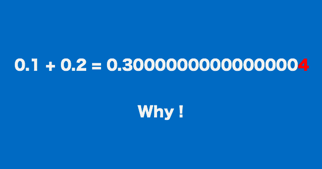
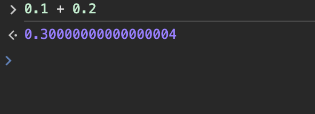
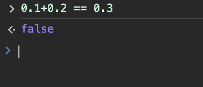
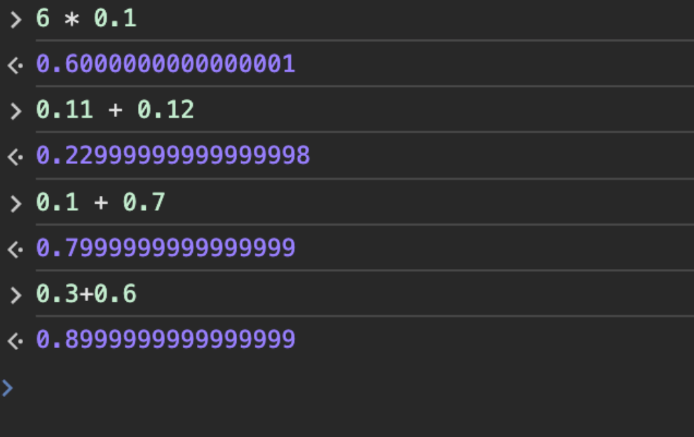
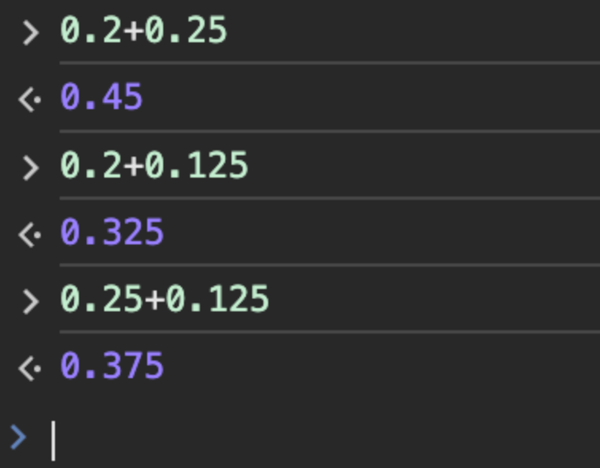
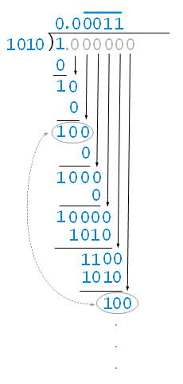
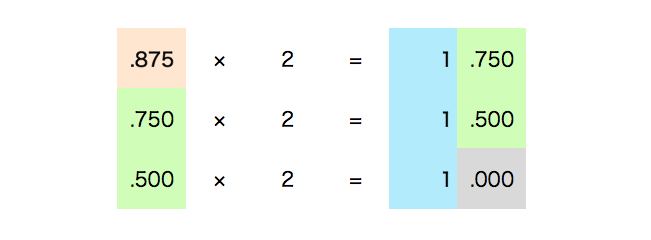
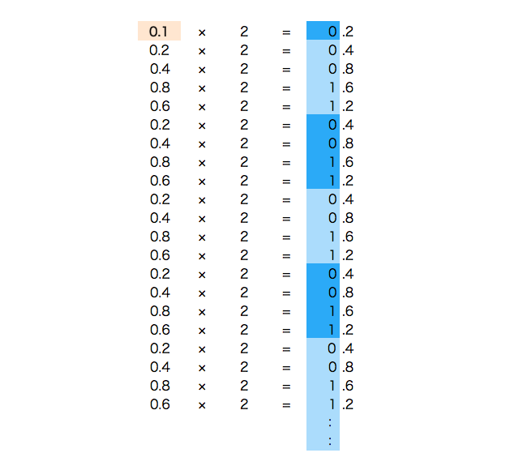
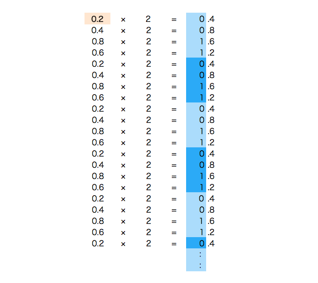
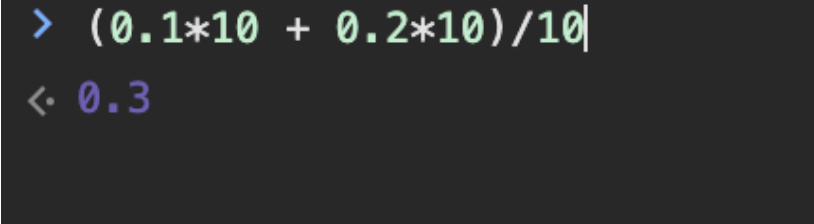

多くのプログラミング言語では、0.1 + 0.2 を計算すると、その結果が 0.3 にならないという奇妙な現象が見られます。例えば、C、C++、JavaScript、Python、Java、Ruby などでもこの問題があります。

このために、ある人はさらにウェブサイトを1つ作成しました。https://0.30000000000000004.com/このサイトでは、0.1 + 0.2 の計算結果が 0.3 ではなく 0.30000000000000004 になるプログラミング言語を確認できます。


JavaScript を使ってデモンストレーションできます。0.1 + 0.2 を計算すると、その結果は 0.3 ではなく、0.30000000000000004 になります。

もちろん、これを条件分岐の文として使うと、返ってくるのも false です：

他にも例があります：
6 * 0.1 = 0.6 但计算机显示为 0.6000000000000001 0.11 + 0.12 = 0.23 但计算机显示为 0.22999999999999998 0.1 + 0.7 = 0.8 但计算机显示为 0.7999999999999999 0.3+0.6 = 0.9 但计算机显示为0.8999999999999999

一方、以下のいくつかの計算式は期待どおりの結果が得られます：

これはなぜでしょうか？
簡単に言うと、コンピュータは2進数ベースの浮動小数点数を使用し、人間は10進数ベースの浮動小数点数を使用するからです。
2進数では、浮動小数点数は通常 IEEE 754 標準を使用して表現されますが、0.1、0.2、0.3 のような小数は正確に表現できません。なぜなら、2進浮動小数点形式を使用しているからです。
IEEE 754 標準はこちらを参照してください：https://zh.wikipedia.org/wiki/IEEE_754
背後にある原理
10進システムでは、分数が基数（10）の素因数を使用して表される場合、その分数は正確に表現できます。
10 の素因数は 2 と 5 です。
したがって、1/2、1/4、1/5 (0.2)、1/8、1/10 (0.1) は正確に表現できます。分母が 10 の素因数を使用しているためです。
一方、1/3、1/6、1/7 は無限循環小数になります。分母が 3 または 7 の素因数を使用しているためです。
2進数（コンピュータが使用するシステム）では、分数が基数（2）の素因数を使用して表される場合、その分数は正確に表現できます。
2 は 2 の唯一の素因数です。
したがって、1/2、1/4、1/8 はすべて正確に表現できます。分母が 2 の素因数を使用しているためです。
一方、1/5 (0.2) や 1/10 (0.1) は無限循環小数になります。分母が 5 または 10 の素因数を使用しているためです。
そのため、0.1 のような10進数の小数を表現しようとすると、コンピュータは近似値を使用します。この近似値は、無限循環する2進数の小数を有限桁の浮動小数点表現に変換することで実現されます。
したがって、コンピュータで浮動小数点演算を行うと、結果にわずかな誤差が生じることがあります。
例えば、0.1 の2進数での近似表現は 0.000110011001100... かもしれませんが、コンピュータの浮動小数点表現では、0.00011001100110 のように切り捨てまたは丸めが行われます。これにより、コンピュータでは 0.1 + 0.2 が 0.3 に等しくならず、わずかにずれることがあります。
0.1 は10分の1（1/10）です。0.1 の2進数表現（つまり2進形式）を得るには、2進数の長除法を使用する必要があります。つまり、2進数の 1 を2進数の 1010 で割ります（1/1010）。次のようになります：

したがって、0.1 の2進数での表現は 0.0001100110011001100110011...（無限循環）となります。
この無限循環パターン 0011 は繰り返し続けます。2進システムはこの方法でしか10進数の 0.1 を近似表現できないためです。
実際のコンピュータシステムでは、この無限循環小数は保存と計算のために有限桁に切り捨てられます。これにより、コンピュータで2進浮動小数点演算を行う際に精度の損失が発生し、0.1 と 0.2 の和が完全には 0.3 に等しくならないことがあります。
10進数の小数を2進数に変換
もう一つ、より理解しやすい方法があります（×2 して整数部分を取り出す方法）。例えば、10進数の小数 0.875 を2進数に変換する場合、10進数の小数部分に 2 を掛け、整数部分を取り出し、小数部分が 0 になるまでこれを繰り返すだけです。

上記で取り出した整数部分を並べた結果 111 は、2進数で表すと.875。
2進数の 1101.111 は、整数部分が 1101、小数部分が 111 で、これは10進数の 13.875 を2進数に変換した結果です。
上記の方法に従って、10進数の小数 0.1 を2進数に変換すると次のようになります：
0.1 = 0.0001100110011001100110011001100110011001100110011001101...

10進数の小数 0.2 を2進数に変換すると次のようになります：
0.2 = 0.001100110011001100110011001100110011001100110011001101...

解決方法
1、小数を先に整数に変換する
まず小数を整数に変換し、加算した後に小数に戻す方法があります。次の例のとおりです：
(0.1*10 + 0.2*10)/10

2、toFixed() メソッドを使用する
toFixed() メソッドは、数値を指定した小数桁数の文字列表現に変換できます。
以下は、toFixed() メソッドを使用して浮動小数点の精度問題を解決する例です：
let sum = 0.1 + 0.2; console.log(sum.toFixed(2)); // 输出: 0.30
注意すべき点は、toFixed() メソッドは表示上の問題は解決しますが、数値の実際の値を変更するわけではなく、数値の表現形式を変えるだけだということです。
正確な数学的演算を行う必要がある場合は、他の方法を使用する必要があるかもしれません。例えば、より高精度な数値型を導入するか、第三者の数学ライブラリを使用して浮動小数点演算を処理する方法です。
3、decimal.js ライブラリを使用する
JavaScript で浮動小数点の精度問題を処理する場合、decimal.js ライブラリを使用する方が、より正確で信頼性の高い解決策です。
decimal.js は任意精度の10進数学ライブラリで、ネイティブ JavaScript の浮動小数点演算における不正確さを回避できます。
Github アドレス：https://github.com/MikeMcl/decimal.js
まず、プロジェクトに decimal.js ライブラリを導入する必要があります。npm を使用してインストール：
npm install decimal.js
HTML で導入：
<script src="../cdnjs.cloudflare.com/ajax/libs/decimal.js/10.2.0/decimal.min.js"></script>
次に、decimal.js を使用して浮動小数点の演算を処理できます。以下に例を示します：
実例
const Decimal = decimal. Decimal;
// 2つのDecimalオブジェクトを作成
let a = new Decimal('0.1');
let b = new Decimal('0.2');
// 加算演算を実行
let sum = a.plus(b);
// 結果を出力
console.log(sum.toString()); // 出力: 0.3
decimal.js ライブラリを使用して得られる結果は正確な 0.3 であり、ネイティブ JavaScript の近似値ではありません。